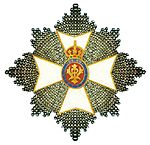

Awards & Honours
David Attenborough has been the recipient of many awards for his work as an environmentalist, writer, and broadcaster. Here are some of his most notable awards and honours.
Never before have we had such an awareness of what we are doing to the planet, and never before have we had the power to do something about it… Surely we have a responsibility to care for our blue planet. The future of humanity, and indeed all life on Earth, now depends on us.
Hover over an image to see the award name and the year it was awarded.
Cherry Kearton Medal & Award
1972
BAFTA Fellowship
1980
Kalinga Prize
1981

Royal Victorian Order
1991
.jpg)
Companion of Honour
1996

RSPB Medal
2000
Michael Faraday Prize
2003

José Vasconcelos World Award of Education
2004
Nierenberg Prize
2005
Order of Merit
2005

Prince of Asturias Award for Social Sciences
2009
George Foster Peabody Award
2015

Royal Canadian Geographical Society Gold Medal
2017

Indira Gandhi Prize
2019

Crystal Award
2019

Landscape Institute Medal for Lifetime Achievement
2019
Knight Grand Cross of the Order of St Michael and St George
2022